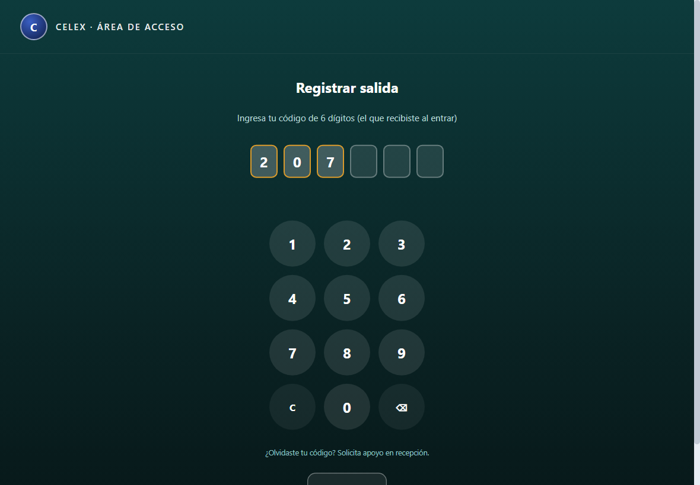

Control de Visitas
Un solo sistema para el acceso de visitantes y la asistencia del personal: adiós a la bitácora de papel. Código digital, foto en caseta y reportes exportables.
👤 Flujo de visitantes
recepción registra · caseta recibeRegistrar
Recepción captura al visitante y el sistema genera su código de acceso; el visitante lo recibe por correo.

Acceso en caseta
El visitante teclea su código, confirma apellido y se toma su foto. Recibe una etiqueta con su código de salida.

Salida
Al salir teclea su código de salida y confirma identidad. El sistema calcula el tiempo de estancia.

🕘 Asistencia del personal
empleados y mensajeros · en el mismo kioskoTeclea su código
El colaborador ingresa su código de 6 dígitos. El sistema lo identifica contra el padrón.

Entrada con foto
La primera marca del día registra la entrada y toma foto. Los mensajeros terminan aquí.

Comida y salida
Los empleados marcan salida a comer → regreso → salida, en orden y con salida anticipada permitida.

Administración y reportes
- Padrón de empleados: alta, edición y baja. El código lo genera el sistema (no se captura) y puede cargarse en masa desde otro sistema.
- Reporte de asistencia: entrada, comida y salida por empleado y día, exportable a CSV.
- Bitácora de visitantes: accesos por rango de fechas, con foto y estado, exportable a CSV.
- Configuración y permisos por usuario de WishPOS (VIP, kiosko, reclutadores).